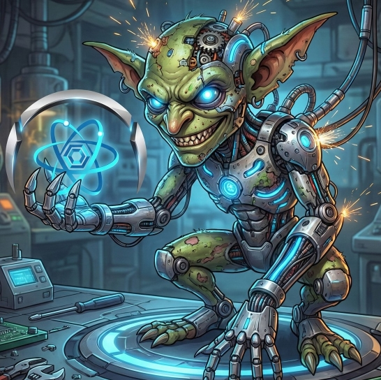

Screenshots


The free, open source Gremlin IDE for Azure Cosmos DB, Apache TinkerPop and JanusGraph.
Download for Windows View on GitHub User Guide
Connect to Azure Cosmos DB Gremlin API, Apache TinkerPop Gremlin Server, JanusGraph and other Gremlin-compatible databases.
Syntax highlighting, auto-completion (Ctrl+Space), tooltips and real-time validation for Gremlin queries.
Interactive graph explorer with drag-and-drop nodes, zoom/pan and edge highlighting. Also JSON, table and tree views.
Built-in in-memory graph database with sample scenarios such as a social network, e-commerce and organization hierarchy.
Discover vertex/edge labels and properties, export scenarios as JSON or C#, generate Stardust.Paradox entities.
See Cosmos DB request charges, keep query history and saved snippets.
MCP server lets AI assistants such as GitHub Copilot query your graphs and discover schema.
Credentials encrypted locally with Windows DPAPI.
git clone https://github.com/JonasSyrstad/Stardust.Paradox.git
cd Stardust.Paradox/src/StardustGremlinStudio/Stardust.Paradox.GremlinStudio
dotnet rung.V().hasLabel('person').out('knows').values('name')Press Ctrl+Enter and switch to the Graph tab to visualize the result.
Yes. It is open source and free to use.
Yes. Paste your Cosmos DB connection string and databases and graphs are discovered automatically.
Yes. The built-in in-memory playground lets you learn Gremlin offline.